[6-5] TIM输入捕获 — 学习笔记
- 课程：江协科技《STM32入门教程-2023版 细致讲解 中文字幕》
- 视频：BV1th411z7sn?p=17，38:54（2334 秒）
- 素材：259 帧关键帧（每 9 秒，宽 1280px）+ PP-OCRv4 画面硬字幕 OCR（675 段）；关键截图 15 张随笔记收录（源图在
vidsum_out/stm32_p17/frames/，站内图片在assets/images/stm32-17/） - 字幕情况：该集 B 站没有 CC/AI 字幕，文本由画面烧录的中文字幕 OCR 得到（source=subtitle-ocr）；本集字幕里混入了不少参考手册正文（讲手册那几段）和 Keil 输出，这些行不是老师口述内容，已剔除，错字已按画面校正（清单见文末「存疑」）。
- 本集定位：这是定时器大节第三部分（输入捕获）的理论课——00:00 直接是 PPT 标题页，00:09–03:45 演示两个已经写好的工程的现象（
6-6 输入捕获模式测频率、6-7 PWMI模式测频率占空比，代码在片头一闪而过、只看到IC_Init()/IC_GetFreq()的调用），03:45 起回 PPT，之后到 38:54 全是原理、结构图、手册寄存器。片尾原话是「我们下一小节来学习输入捕获的代码部分」，所以本集不写TIM_ICInit等配置，代码在 P18 [6-6]。
一句话结论
输入捕获（IC = Input Capture）在原理上就一句话：当通道输入引脚出现指定的电平跳变（上升沿或下降沿，可配置）时，把当前 CNT 的值锁存到 CCR 里——也就是「把某个时刻的计数值拍个快照存起来」。所以它能测 PWM 的频率、占空比、脉冲间隔、电平持续时间：测频用测周法——两个上升沿之间 CNT 从 0 数到 N（N 就是周期对应的计数值），因为 CNT 由标准频率 fc = 72MHz/(PSC+1) 驱动，所以 fx = fc/N，而波形频率低、周期长时测周法计次数多、误差小（高频才适合测频法 fx = N/T，两法的分界是中界频率 fm = √(fc/T)）；关键配套是主从触发模式——触发源选 TI1FP1 + 从模式选 Reset，就能让每次上升沿捕获之后硬件自动把 CNT 清零，整个测量不进中断、不占软件，程序只要读 CCR1 再算 fc/CCR1；而 PWMI 模式更巧：用同一个引脚的上升沿（TI1FP1，捕周期、清 CNT）和下降沿（TI1FP2，捕高电平时间）分别触发通道 1 和通道 2，于是 CCR1 = 一个周期的计数值、CCR2 = 高电平的计数值，占空比 = CCR2/CCR1，频率和占空比一次全测。硬件上要注意：输入捕获和输出比较共用 4 个 CCR 和 CH1～CH4 引脚，同一路不能同时用；每个高级/通用定时器都有 4 个通道、基本定时器没有；通道上还有**滤波器（ICF，fDTS 采样、连续 N 个相同才翻转）、边沿极性（CC1P）、数据选择器（CC1S，可交叉）、预分频（IC1PSC /1～/8）、使能（CC1E）**这些环节；从模式的触发源只有 TI1FP1/TI2FP2（没有 TI3/TI4），所以 CH3/CH4 想清零 CNT 只能靠捕获中断手动做（烦、耗软件）；ARR 一般设成最大 65535，否则信号频率太低时 CNT 会溢出。本集一行 IC 代码都没写，代码在 P18 [6-6]。
0. 本集定位：理论课（片头是成品工程），代码在 [6-6] P18
- 本集是纯理论课：片头 3 分半只是两个现成工程的现象演示，03:45 起「接下来我们回到 PPT，看一下输入捕获的理论部分」，之后 35 分钟全是 PPT 与参考手册。
- 片头两个程序（就是 P18 要写的两个）：
6-6 输入捕获模式测频率：用上一节的 PWM 模块在 PA0 输出频率/占空比可调的波形，一根线把 PA0 与 PA6 连起来（PA6 是本节的测量输入口），OLED 显示Freq:01000Hz——自己测自己。6-7 PWMI模式测频率占空比：OLED 第一行频率、第二行占空比（Freq:01000Hz/Duty:50%），改参数后测出200Hz / 20%。
- 片头的 main.c 里已经能看到
IC_Init()、IC_GetFreq()这些调用（图 2），但IC.c是怎么写的，本集没有讲——留到 P18；程序二的 main.c 本集没拍到，IC_GetDuty()是按功能推断（存疑里注明）。 - 不要在本笔记里找
TIM_ICInit的成员值：TIM_ICInit、TIM_PWMIConfig、TIM_SelectInputTrigger、TIM_SelectSlaveMode这些本集都没有出现，属于 P18 的内容。 - 编号对照：本集视频是 [6-5]，片头两个工程目录却叫
6-6/6-7（作者按「代码小节」编号）——和 P15/P16 一样，两套编号不是一回事。
1. 片头两个程序的现象
1.1 程序一：输入捕获模式测频率（00:09–01:35）
- 要测外部信号的频率，先得有个信号源、产生一个频率和占空比可调的波形；考虑到大家可能没有信号发生器，作者借用了上一小节的代码：先用 PWM 模块在 PA0 端口输出频率和占空比可调的波形。
- 本节的测量输入口是 PA6，所以直接用一根线把 PA0 和 PA6 连在一起，就能测量自己 PWM 模块产生波形的频率。
- 如果有示波器，可以把探头也接在这根线上核对频率值；如果有信号发生器，就不需要 PA0 自己输出波形，直接把可调测试信号接在 PA6 即可。
- 现象：OLED 上显示的频率是 1000Hz——说明通过 PA6 的测试，PA0 输出的是一个 1000Hz 的信号。
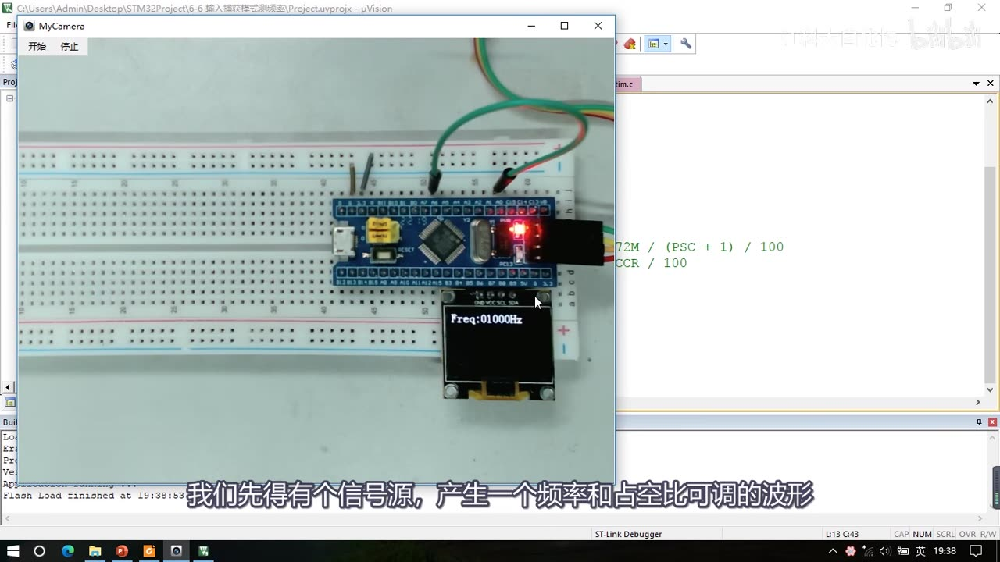
图 1：程序一现象——Keil 工程 6-6 输入捕获模式测频率，面包板上 PA0 的 PWM 输出用一根线接到 PA6（自测），OLED 显示 Freq:01000Hz；右侧代码区隐约可见 72M / (PSC + 1) / 100 与 CCR / 100
- 回到程序看频率和占空比的参数调节部分：当前预分频系数是 720，代入公式算出来就是 1000Hz；加大预分频（扩大 10 倍 → 7200）输出频率就是 100Hz，改 3600 就是 200Hz——OLED 上的测量值跟着变（100Hz、200Hz），说明测量正确。
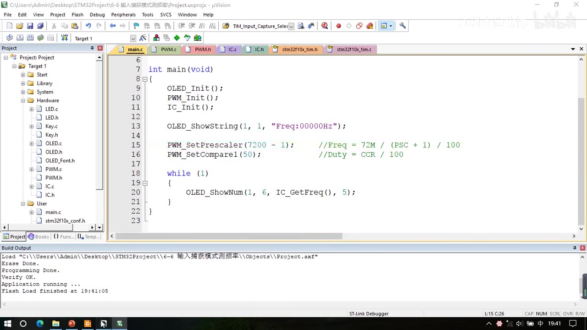
图 2：程序一 main.c——OLED_Init(); PWM_Init(); IC_Init();，OLED_ShowString(1, 1, "Freq:00000Hz")，信号源参数 PWM_SetPrescaler(7200 - 1); //Freq = 72M / (PSC + 1) / 100、PWM_SetCompare1(50); //Duty = CCR / 100，主循环 OLED_ShowNum(1, 6, IC_GetFreq(), 5);（IC 模块本集不讲，代码在 P18）
1.2 程序二：PWMI 模式测频率和占空比（02:35–03:45）
- 第一个程序只能测频率，还不能测占空比。要同时测频率和占空比，STM32 的输入捕获还设计了 PWMI 模式（PWM 输入模式）。
- 现象：OLED 第一行显示频率 1000Hz，第二行显示占空比 50%；对应程序里的 PWM 参数：当前频率 = 72M/分频系数 720/100 = 1000Hz，占空比 = CCR 50/100 = 50%。
- 改参数：分频系数给 3600 → 频率 200Hz，CCR 给 20 → 占空比 20%；实测**「目前看到测量得到的频率 200Hz，占空比 20%，没问题」**。
- 作者说可以自行改参数尝试，或者用信号发生器测试，都可以。
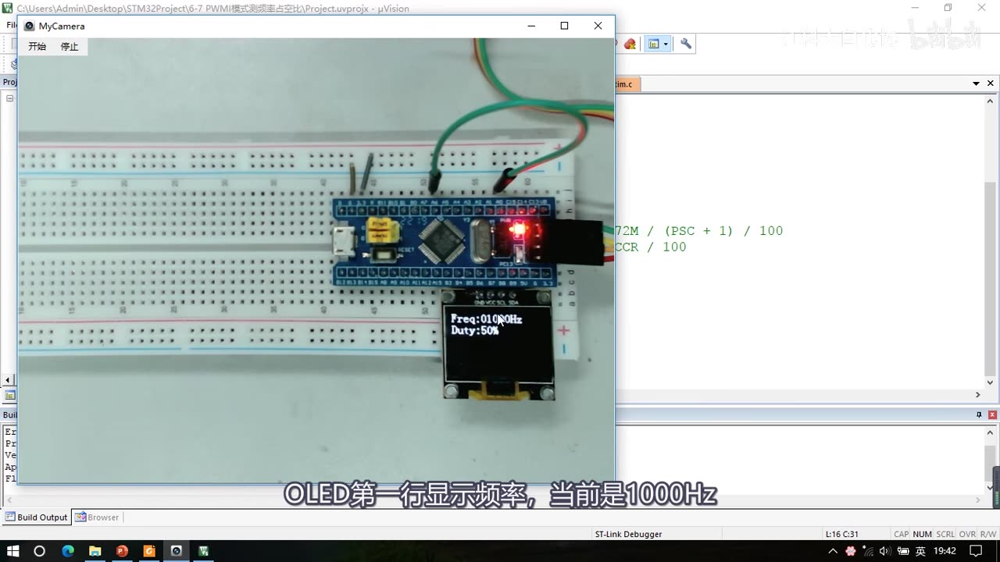
图 3：程序二现象——Keil 工程 6-7 PWMI模式测频率占空比，OLED 第一行 Freq:01000Hz、第二行 Duty:50%；字幕「OLED第一行显示频率，当前是1000Hz」
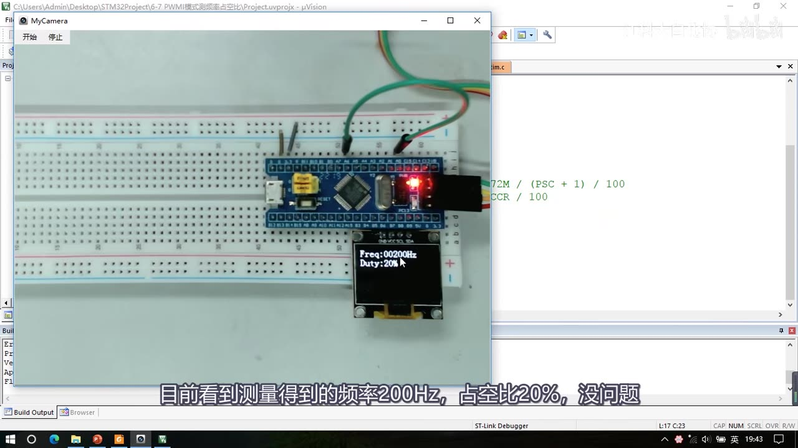
图 4：程序二改参数后——OLED 显示 Freq:00200Hz / Duty:20%（PSC 改 3600、CCR 改 20）；字幕「目前看到测量得到的频率200Hz，占空比20%，没问题」
2. 输入捕获是什么
2.1 核心定义
- IC = Input Capture，输入捕获（直译）。
- 「输入捕获模式下，当通道输入引脚出现指定电平跳变时，当前 CNT 的值将被锁存到 CCR 中」——这个指定的电平跳变就是上升沿或者下降沿，可以通过程序配置。
- 「锁存到 CCR」的意思就是：把当前 CNT 的值读出来、写入到 CCR 中去。
- 用途：可用于测量 PWM 波形的频率、占空比、脉冲间隔、电平持续时间等参数（脉冲间隔和频率差不多是一个意思，电平持续时间和占空比差不多）。
- 资源：每个高级定时器和通用定时器都拥有 4 个输入捕获通道；基本定时器没有输入捕获功能（通用定时器和高级定时器的输入捕获电路没有区别，都是一样的）。
- 还有两个配套功能：可配置为 PWMI 模式，同时测量频率和占空比；可配合主从触发模式，实现硬件全自动测量——「把这两个功能结合起来，测量频率占空比就是硬件全自动执行，软件不需要进行任何干预，也不需要进中断，需要测量的时候直接读取 CCR 寄存器就行了」。
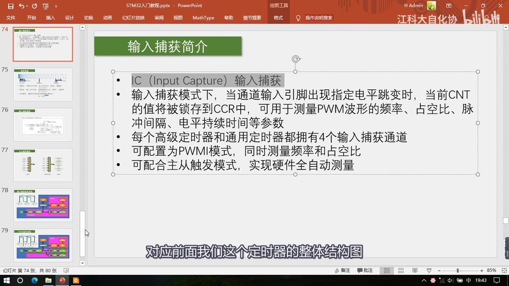
图 5：PPT「输入捕获简介」——IC（Input Capture）输入捕获；输入捕获模式下，当通道输入引脚出现指定电平跳变时，当前 CNT 的值将被锁存到 CCR 中，可用于测量 PWM 波形的频率、占空比、脉冲间隔、电平持续时间等参数；每个高级/通用定时器都有 4 个输入捕获通道；可配置为 PWMI 模式、可配合主从触发模式实现硬件全自动测量
2.2 与输出比较的关系：共用 CCR 和引脚
- 在定时器的整体结构图里，左边一部分是输入捕获电路，右边是之前讲过的输出比较电路。
- 输入捕获和输出比较通道共用 4 个 CCR 寄存器；它们的 CH1～CH4 四个通道引脚也是共用的。
- 所以对于同一个定时器，输入捕获和输出比较只能使用其中一个，不能同时使用。
2.3 与输出比较、外部中断的对比
| 对比项 | 输出比较 | 输入捕获 | 外部中断 |
|---|---|---|---|
| 引脚方向 | 输出端 | 输入端 | 输入 |
| 触发来源 | CNT 与 CCR 的大小关系 | 输入引脚的电平跳变 | 输入引脚的电平跳变 |
| 触发后做什么 | 根据比较结果输出高低电平 | 把当前 CNT 锁存到 CCR（并产生捕获事件） | 向 CPU 请求中断 |
- 输入捕获的执行流程：输入引脚出现指定电平跳变 → 输入滤波和边沿检测电路检测到这个沿 → 让输入捕获电路产生动作 → 当前 CNT 的值锁存到 CCR 寄存器 → 同时产生捕获事件（状态寄存器置标志位，也可以产生中断）。
- 所以这一块的作用和外部中断差不多，都是检测电平跳变、然后执行动作，只不过外部中断执行的动作是向 CPU 申请中断，而这里电路执行的动作是控制后续电路（把 CNT 锁存进 CCR）。
2.4 一句话记住
- 输出比较：引脚是输出端，按 CNT 与 CCR 的大小关系执行输出动作。
- 输入捕获：引脚是输入端，接收到输入信号后执行「CNT 锁存到 CCR」的动作。
3. 频率测量基础
既然要测 PWM 信号的频率，就得先补一点频率测量的通用知识（08:35～18:35，这一段是本集的重点之一）。
3.1 前提：STM32 只能测数字信号
- 图示是一个频率逐渐降低的方波：越往左频率越高，越往右频率越低；这些都是只有高低电平的数字信号。
- 对 STM32 测频率而言，它也是只能测量数字信号的：
- 要测正弦波，得先搭信号预处理电路——最简单的是用运放搭一个比较器，把正弦波转换为数字信号，再输入给 STM32；
- 如果测量的信号电压非常高，还要考虑隔离问题——比如用隔离放大器、电压互感器等元件隔离高压端和低压端，保证电路安全。
- 总之，经过处理最终输入给 STM32 的信号，要是高低电平信号：高电平 3.3V、低电平 0V。
3.2 测频法：闸门时间内数上升沿
- 执行流程：在闸门时间 T 内，对上升沿计次，得到 N，则待测信号频率
fx = N / T。- 计次下降沿也可以，只是极性不同而已，都是一样的；为了描述方便，统一以上升沿为一个周期的开始。
- 原理：1s 内来了多少个周期，频率就是多少 Hz——这符合频率的基本定义（1s 内出现了多少个重复的周期）。
- 闸门时间不必为 1s：T=1s 时计次值 N 直接就是频率（Hz）；T=2s 时计次值除以 2；T=0.5s 时计次值乘以 2。
3.3 测周法：两个上升沿之间数标准频率
- 执行流程：两个上升沿内，以标准频率 fc 计次，得到 N，则频率
fx = fc / N。 - 原理：周期的倒数就是频率——如果能测出一个周期的时间，再取倒数就是频率；而我们没有精度无穷大的秒表，所以测量时间实际上也是定时器计次：用一个已知标准频率 fc 的计次时钟驱动计数器，从一个上升沿开始从 0 计，直计到下一个上升沿停止；计一个数的时间是 1/fc，计 N 个数的时间就是 N/fc，这就是周期，取倒数就得到
fx = fc / N。
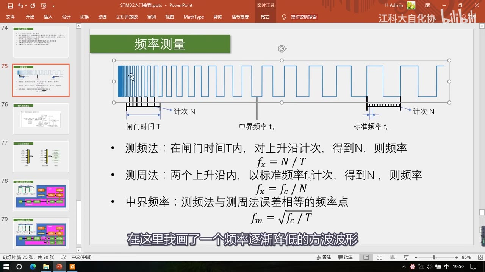
图 6：PPT「频率测量」——波形上标出「闸门时间 T / 中界频率 fm / 标准频率 fc」和两次「计次 N」；三个公式：测频法 fx = N/T、测周法 fx = fc/N、中界频率 fm = √(fc/T)
3.4 两法对比
| 对比项 | 测频法 fx = N/T |
测周法 fx = fc/N |
|---|---|---|
| 适合的信号 | 高频（闸门内上升沿多，N 大误差小） | 低频（周期长，计次数多） |
| 不适合 | 频率太低：1s 内只有寥寥几个沿甚至 0 个沿，误差极大 | 频率太高：fc=1MHz、待测 500kHz 时一个周期只能计一两个数，甚至一个数也计不到 |
| 结果更新速度 | 慢：闸门时间内测多个周期，1s 才出一次结果 | 快：只测一个周期就出一次结果（出结果速度取决于待测信号频率，一般几百几千 Hz 时更新更快） |
| 结果平滑度 | 平滑：测的是多个周期，自带均值滤波，是这段时间的平均频率 | 波动大：只测一个周期，受噪声影响 |
3.5 ±1 计数误差：两法都固有，N 越大影响越小
- 测频法：闸门时间内并不是每个周期信号都是完整的——假设闸门时间到了，可能有一个周期刚出现一半，这半个周期只能舍弃、或者当成一整个周期来看，因为计次只有整数，不可能计 0.5 个数。
- 测周法：标准频率 fc 计次，最后时刻有可能数到一半时间就结束了，这半个数也只能舍弃、或者按一整个数来算。
- 所以**「±1 误差」是这两种方法都固有的误差**；要想减小它的影响，只能尽量多计一些数——N 越大，±1 对 N 的相对影响越小。
- 作者打了个比方：一瓶水本来 2 块、商家卖 3 块，你觉得黑心；一台电脑本来 5000 块、商家卖 5001，你可能就觉得无所谓了。
3.6 中界频率：两法误差相等的分界点
- 中界频率就是「测频法与测周法误差相等的频率点」——当待测频率等于它时，两法的计次 N 相同、误差相同。
- 推导（口述）：测频法的 N 与测周法的 N 列出来，令两个 N 相等，把 f 解出来，就得到
fm = √(fc / T)。 - 结论：当待测信号频率小于中界频率时，测周法误差更小、选用测周法更合适；大于中界频率时，测频法误差更小、选用测频法更合适。
3.7 STM32 上怎么实现这两种方法
- 测频法：用之前学过的外设就能实现——写过「对射式红外传感器计次」「定时器外部时钟」的代码，每来一个上升沿计次 +1，再用一个定时器定一个 1s 的定时中断，在中断里每隔 1s 取一下计次值、同时清零，这样每次读取的计次值直接就是频率。作者明确说「这部分代码应该也不难实现吧，大家可以自行研究，我就不再演示了」。
- 测周法：本集输入捕获测频率，使用的方法就是测周法——测量两个上升沿之间的时间，来进行频率测量。接下来分析电路怎么实现它。
4. 输入捕获总结构图（通用定时器框图）
回到定时器框图，从左到右看输入捕获的各部分电路：
- 最左边是四个通道的引脚（TIMx_CH1～CH4）——具体复用在哪，参考引脚定义表。
- 引脚进来先过一个「三输入异或门」：它的输入接在通道 1、2、3 上；异或门的逻辑是当三个输入引脚的任何一个有电平翻转时，输出引脚就产生一次电平翻转。之后输出通过数据选择器到达输入捕获通道 1——数据选择器选上面一个，通道 1 的输入就是 3 个引脚的异或值；选下面一个，异或门就没用、4 个通道各用各的引脚。这个异或门是为三相无刷电机服务的：无刷电机有 3 个霍尔传感器检测转子位置、据此换相，有了这个异或门就可以在前三个通道接霍尔传感器，让定时器作为无刷电机的接口定时器去驱动换相电路（本课暂时不涉及）。
- 输入滤波器和边沿检测器：滤波器对信号滤波，避免一些高频的毛刺信号误触发；边沿检测器和外部中断那里一样，可以选择上升沿/下降沿（极性），出现指定电平时触发后续电路。
- 两套滤波和边沿检测电路：第一套经过滤波和极性选择得到
TI1FP1（TI1 Filter Polarity 1），第二套得到TI1FP2；同理通道 2 的信号进来也经过两套，得到TI2FP1、TI2FP2。其中 TI2FP1 输入给上面（通道 1 后续）、TI2FP2 输入给下面（通道 2 后续）——两个信号进来可以各走各的，也可以交叉。 - 交叉连接的目的（20:56）：①灵活切换后续捕获电路的输入（一会儿想以 CH1 为输入、一会儿想以 CH2 为输入）；②把一个引脚的输入同时映射到两个捕获单元——这就是 PWMI 模式的经典结构：第一个捕获通道用上升沿触发、捕周期，第二个通道用下降沿触发、捕占空比，两个通道同时对一个引脚捕获，就能同时测量频率和占空比。通道 3、4 也是同样的结构（可独立、可交叉）。
- TRC 信号也可以作为捕获部分的输入（来源于从模式控制器），同样是为无刷电机驱动设计的，暂时不用。
- 预分频器：每个通道各有一个，可以对前面的信号分频；分频之后的触发信号才可以触发捕获电路。
- 捕获动作：每来一个触发信号，CNT 的值就会向 CCR 转运一次；转运的同时会产生一个「捕获事件」（状态寄存器置标志位，也可以产生中断）——如果需要在捕获瞬间处理一些事情，就可以开启捕获中断。
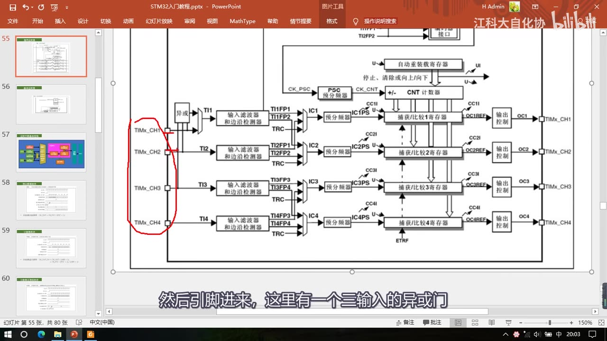
图 7：输入捕获总结构图（通用定时器框图）——红圈标出左边的 4 个通道引脚 TIMx_CH1～CH4；引脚进来是三输入异或门，然后「输入滤波器和边沿检测器」得到 TI1FP1/TI1FP2（TI2FP1/TI2FP2 可交叉），经预分频器进入「捕获/比较寄存器」，另有 TRC 输入
4.1 这和图123 的关系
- 上面这张图是总结构，24:36 的图123「捕获/比较通道（如：通道 1 输入部分）」是它的细化结构，基本功能一样（第 5 章专门讲）。
- 把图123 和测周法对应起来就是：上升沿用于触发输入捕获，CNT 用于计数计时；每来一个上升沿，取一下 CNT 的值、自动存在 CCR 里，CCR 捕获到的值就是计数值 N，CNT 的驱动时钟就是 fc，
fc/N就得到待测信号的频率。 - 还有一个细节：每次捕获之后都要把 CNT 清零，这样下次上升沿再捕获时，取出的 CNT 才是两个上升沿之间的时间间隔——这个「捕获后自动清零 CNT」可以用主从触发模式自动完成（第 6 章）。
5. 图123：输入捕获通道的细节
5.1 一条完整通路
以通道 1 为例（23:51～27:20），信号从左往右：
| 环节 | 说明 | 寄存器位 |
|---|---|---|
| TI1 | CH1 的输入引脚 | — |
| 滤波器 | 输入是 TI1，输出是滤波后的 TI1F；fDTS 是滤波器的采样时钟来源，滤波参数由 ICF 位控制 |
ICF[3:0]，TIMx_CCMR1 |
| 边沿检测器 | 捕获上升沿或下降沿（TI1F_Rising / TI1F_Falling），用 CC1P 选极性 |
CC1P，TIMx_CCER |
| 数据选择器 | 由 CC1S[1:0] 选进入后续捕获电路的信号：01→TI1FP1、10→TI2FP1、11→TRC；00 表示该通道配置为输出（不走捕获）。注意 TI1F_ED 不进数据选择器，它是直接送给从模式控制器的信号 |
CC1S[1:0]，TIMx_CCMR1 |
| 分频器 | 不分频 / 2 分频 / 4 分频 / 8 分频 | IC1PSC，TIMx_CCMR1 |
| 输出使能 | 控制使能/失能，使能后指定边沿经层层电路到达，就能让 CNT 的值转运到 CCR | CC1E，TIMx_CCER |
- 另外，TI1FP1 信号和 TI1 的边沿信号都可以通向从模式控制器——所以 TI1FP1 的上升沿既能触发捕获，又能同时触发从模式（第 6 章）。
- 图里画的是通道 1；实际上还有一套一样的电路得到
TI1FP2、连到通道 2 的后续电路（图里没画），通道 2 也有TI2FP1（连通道 1）和TI2FP2（连通道 2），总共 4 种连接方式。
5.2 滤波器怎么工作：连续 N 个相同才翻转
- 手册描述：这几位定义了 TI1 输入的采样频率及数字滤波长度；数字滤波器由事件计数器组成，它记到 N 个事件后才会产生一次输出的跳变。
- 通俗理解：以采样频率对输入信号进行采样，当连续 N 个值都为高电平，输出才为高电平；连续 N 个值都为低电平，输出才为低电平；如果信号出现高频抖动，导致连续采样 N 个值不全都一样，那输出就不会变化——这样就达到了滤波效果。
- 采样频率越低、采样个数 N 越大，滤波效果就越好；实际应用中如果波形噪声比较大，就把这个参数设置大一些，就可以过滤噪声了。
5.3 手册里的 ICF 表与 CC2S
ICF[3:0]（输入捕获滤波器）：0000无滤波器、以 fDTS 采样；0001采样频率fCK_INT、N=2；0010fCK_INT、N=4；0011fCK_INT、N=8；0100fDTS/2、N=6；0101fDTS/2、N=8；0110fDTS/4、N=6；0111fDTS/4、N=8；1000fDTS/8、N=6；1001fDTS/8、N=8；1010fDTS/16、N=5；1011fDTS/16、N=6；1100fDTS/16、N=8；1101fDTS/32、N=5；1110fDTS/32、N=6；1111fDTS/32、N=8。CC2S[1:0]（捕获/比较 2 选择）：00输出；01输入、IC2 映射在 TI2 上；10输入、IC2 映射在 TI1 上；11输入、IC2 映射在 TRC 上（此模式仅工作在内部触发器输入被选中时，由 SMCR 的 TS 位选择）。IC1PSC[1:0]：输入/捕获 1 的预分频器系数。
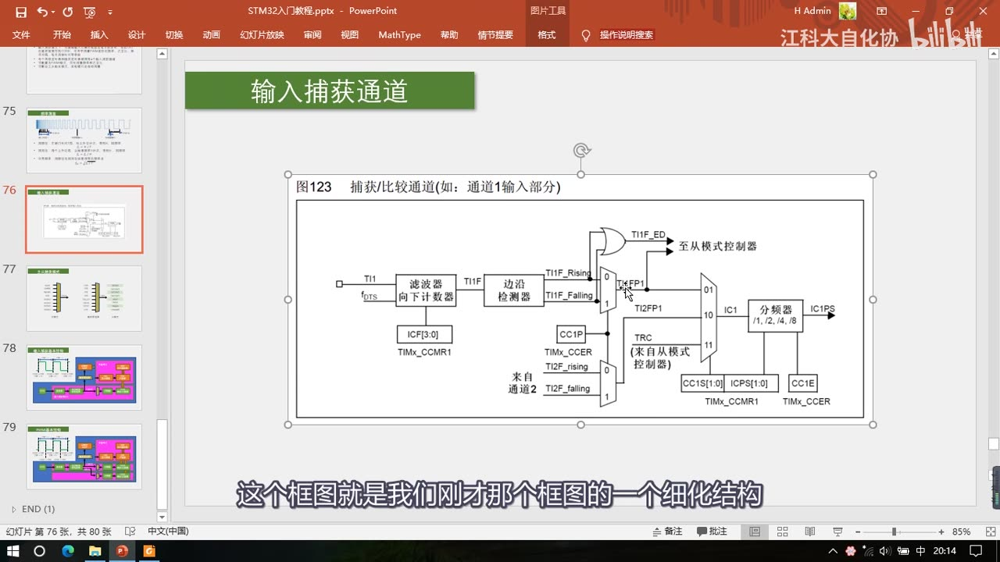
图 8：图123「捕获/比较通道（如：通道1输入部分）」——TI1 → 滤波器（fDTS、ICF（3:0），TIMx_CCMR1）→ 边沿检测器 → CC1P 极性 → TI1FP1/TI1FP2；TI1F_ED → 至从模式控制器；数据选择器 CC1S（1:0）（可选 TI1FP1/TI2FP1/TI1F_ED/TRC）→ 分频器 /1、/2、/4、/8（IC1PSC）→ CC1E 使能 → IC1PS
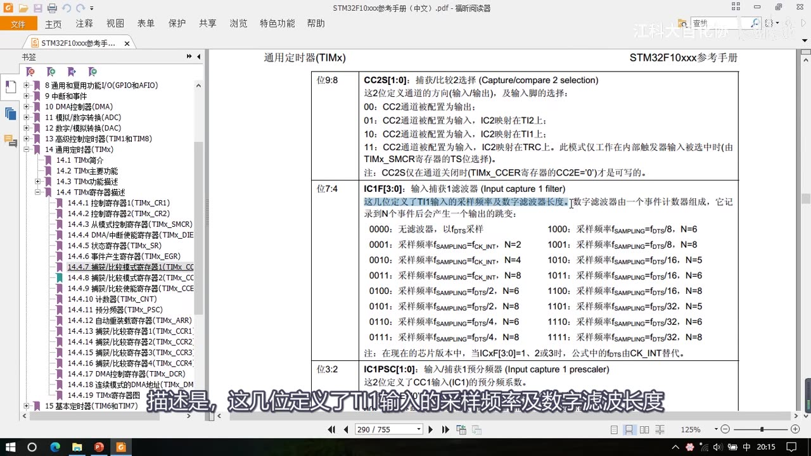
图 9：手册 CCMR2——CC2S[1:0]（00 输出 / 01 IC2 映射 TI2 / 10 IC2 映射 TI1 / 11 IC2 映射 TRC）、IC2F[3:0] 输入捕获滤波器表（0000 无滤波器、0001 fCK_INT N=2 …… 1111 fDTS/32 N=8）、IC1PSC[1:0] 输入捕获预分频器；字幕「这几位定义了 TI1 输入的采样频率及数字滤波长度」
6. 主从触发模式：硬件自动化的关键
6.1 「主从触发模式」是三个功能的简称
- 先说明：「主从触发模式」这个名字是作者自己起的，手册里并没有这个描述。它就是主模式 + 从模式 + 触发源选择这三个功能的简称：
| 功能 | 作用 |
|---|---|
| 主模式 | 把定时器内部的信号映射到 TRGO 引脚，用于触发别的外设（Reset / Enable / Update / OC1 / OC1REF / OC2REF / OC3REF / OC4REF） |
| 触发源选择 | 选择从模式的触发信号源，得到 TRGI（ITR0～ITR3 / TI1F_ED / TI1FP1 / TI2FP2 / ETRF） |
| 从模式 | 接收其他外设或自身外设的信号，控制自身定时器的运行（被 TRGI 触发后执行操作：Closed / Encoder1～3 / Reset / Gated / Trigger / External1） |
- 所以可以这样串起来：主模式把内部信号映射成 TRGO → 触发别的外设（或别的定时器）；而从模式是「被 TRGI 控制」——触发源选择挑一个信号得到 TRGI，TRGI 去触发从模式，从模式在列表里选一项操作自动执行。在库函数里也非常简单：这三块东西对应三个函数，调用函数给个参数就行了。
6.2 我们的任务：让 TI1FP1 自动清零 CNT
- 想让 TI1FP1 信号自动触发 CNT 清零：触发源选择选
TI1FP1，从模式执行的操作选Reset——这样 TI1FP1 的信号就可以自动触发从模式，从模式自动清零 CNT，实现硬件全自动测量。 - 这也是主从触发模式的用途：作者特别说，从模式就是完成自动化操作的利器。
- 除了清 CNT，主从触发还能做定时器级联：一个定时器主模式输出更新信号到 TRGO，另一个定时器从模式选外部时钟模式 1，就能实现级联。其他很多高级功能也都可以用主从触发模式来实现，使用非常灵活；这些信号的具体含义「不用特别去记，知道有这个功能就行了，需要用的时候再来看看」。
6.3 手册 SMCR：TS[2:0] 与 SMS[2:0]
| 位 | 名称 | 取值 |
|---|---|---|
| 位 6:4 | TS[2:0] 触发选择 |
000 ITR0（内部触发 0，TIM1）、001 ITR1（TIM2）、010 ITR2（TIM3）、011 ITR3（TIM4）、100 TI1 的边沿检测器（TI1F_ED）、101 滤波后的定时器输入 1（TI1FP1）、110 滤波后的定时器输入 2（TI2FP2）、111 外部触发输入（ETRF） |
| 位 2:0 | SMS[2:0] 从模式选择 |
000 关闭（CEN=1 时预分频器由内部时钟驱动）、001 编码器模式 1、010 编码器模式 2、011 编码器模式 3、100 复位模式（选中触发输入 TRGI 的上升沿重新初始化计数器并产生一个更新事件）、101 门控模式、110 触发模式、111 外部时钟模式 1 |
- 复位模式执行的「重新初始化计数器」，是不是就是清零 CNT 的意思？——是的，这就是我们要的从模式操作。
- 注意手册的补充：TS 位只能在未用到（SMS=000）时被改变，以避免改变时产生错误的边沿检测；从模式选择时，选中的触发输入 TRGI 的有效边沿与外部输入极性相关。
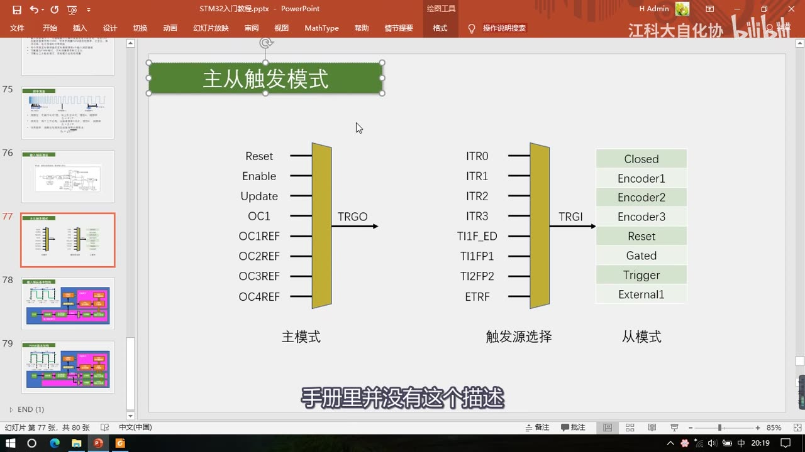
图 10：PPT「主从触发模式」三张图——主模式（Reset/Enable/Update/OC1/OC1REF～OC4REF → TRGO）、触发源选择（ITR0～ITR3/TI1F_ED/TI1FP1/TI2FP2/ETRF → TRGI）、从模式（Closed/Encoder1～3/Reset/Gated/Trigger/External1）；字幕「手册里并没有这个描述」
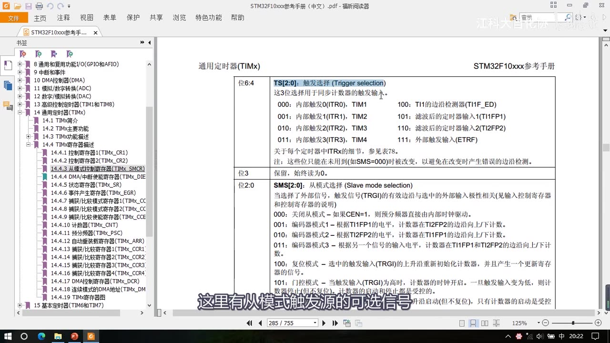
图 11：手册 SMCR——TS[2:0] 触发选择（000 ITR0 …… 100 TI1F_ED、101 TI1FP1、110 TI2FP2、111 ETRF）与 SMS[2:0] 从模式选择（000 关闭、001～011 编码器、100 复位模式、101 门控、…）；字幕「这里有从模式触发源的可选信号」
7. 输入捕获基本结构（单通道测频率，本节重点图）
把前面所有东西组合起来，就是本集第一个重点图——输入捕获基本结构（对应程序一 6-6 的逻辑）：
- 只用了一个通道，所以它只能测量频率。
- 右上角是时基单元：配置好、启动定时器，CNT 就在预分频之后的时钟驱动下不断自增；这个 CNT 就是测周法用来计数计时的东西。
- 经过预分频之后这个位置的时钟频率，就是驱动 CNT 的标准频率 fc，所以
fc = 72M / (PSC + 1)（预分频系数 = PSC+1）。 - 下面输入捕获通道 1：GPIO 输入一个方波 → 经滤波器和边沿检测 → 选 TI1FP1 为上升沿触发 → 输入选择直连通道、分频器选不分频 → 当 TI1FP1 出现上升沿后，CNT 的当前计数值转运到 CCR1；同时触发源选中 TI1FP1、从模式选复位，TI1FP1 的上升沿还会通过上面这一路去触发 CNT 清零。
- 两条路的先后顺序：肯定是先转运 CNT 的值到 CCR，再触发从模式给 CNT 清零（或者两者非阻塞地同时转移），绝不会先清零再捕获——要不然捕获值肯定都是 0 了。
- 工作过程（左上波形）：上一个上升沿 →
CCR1 = CNT、CNT = 0（捕获自动执行、清零由从模式自动执行）→ CNT 在标准时钟驱动下从 0 开始自增，一直到下一个上升沿 → 再次CCR1 = CNT、CNT = 0……所以**CCR1的值始终保持为最新一个周期的计数值**，这个值就是测周法里的 N。 - 公式与读法：
fx = fc / N，其中N = CCR1——所以想读频率，只需要读 CCR1 得到 N、再算 fc/N 就行了；不需要读的时候，整个电路全自动测量，不占任何软件资源。
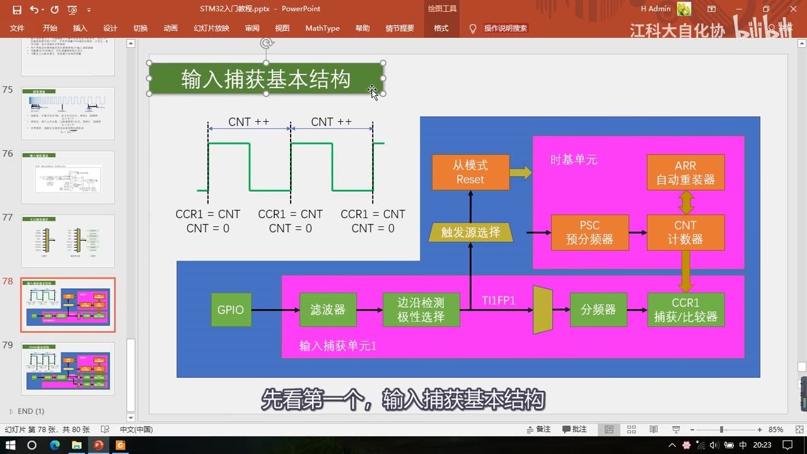
图 12：PPT「输入捕获基本结构」（本节重点图）——右上时基单元（PSC 预分频器 → CNT 计数器、ARR 自动重装器）；下面输入捕获单元1：GPIO → 滤波器 → 边沿检测极性选择 → TI1FP1 → 分频器 → CCR1 捕获/比较器；TI1FP1 同时经「触发源选择 → 从模式 Reset」清零 CNT；左上波形标注 CCR1 = CNT / CNT = 0 与 CNT ++
7.1 两个必须注意的点
- ①
ARR一般设置为最大 65535：因为 CNT 的值有上限——CNT 最大只能计 65535 个数；如果信号频率太低，一个周期要计的数超过上限，CNT 计数值就会溢出（测周法就出错了）。所以把 ARR 设成最大，让可测周期尽量长。 - ② 从模式的触发源只有
TI1FP1和TI2FP2，没有 TI3/TI4 的信号：所以想用从模式自动清零 CNT，就只能用通道 1 和通道 2；通道 3、通道 4 只能开启捕获中断、在中断里手动清零——不过这样程序就会处于频繁中断的状态，比较消耗软件资源。
8. PWMI 基本结构（同时测频率和占空比，本节重点图）
PWMI（PWM 输入）模式使用两个通道同时捕获一个引脚，可以同时测量周期和占空比（对应程序二 6-7 的逻辑）：
- 上面这部分结构和刚才的输入捕获基本结构一样；下面多了一个通道。
- 首先，TI1FP1 配置为上升沿触发：触发捕获和清零 CNT，正常地捕获周期——
CCR1= 一整个周期的计数值。 - 然后，TI1FP2 配置为下降沿触发，通过交叉通道去触发通道 2 的捕获单元。
- 结果（看左上波形）：最开始上升沿 →
CCR1捕获、同时清零 CNT → CNT 一直 ++ → 在下降沿这个时刻，触发 CCR2 捕获，所以CCR2的值就是从上升沿到下降沿这段（高电平期间）的计数值；CCR2 捕获并不触发 CNT 清零，所以 CNT 继续 ++，直到下一次上升沿 →CCR1捕获周期、CNT 清零…… - 于是：
CCR1就是一整个周期的计数值，CCR2就是高电平期间的计数值，所以占空比 = CCR2 / CCR1。 - 两种接法可以灵活切换：可以让两个通道同时捕获第一个引脚（用 TI1FP1/TI1FP2，通道 2 前面那一部分没用到），也可以配置成两个通道同时捕获第二个引脚的输入（那就用 TI2FP1/TI2FP2 这两个信号）。
- 这就是 PWMI 模式用两个通道捕获频率和占空比的思路，也是「一个引脚同时映射到两个捕获单元」这个交叉设计的主要用途。
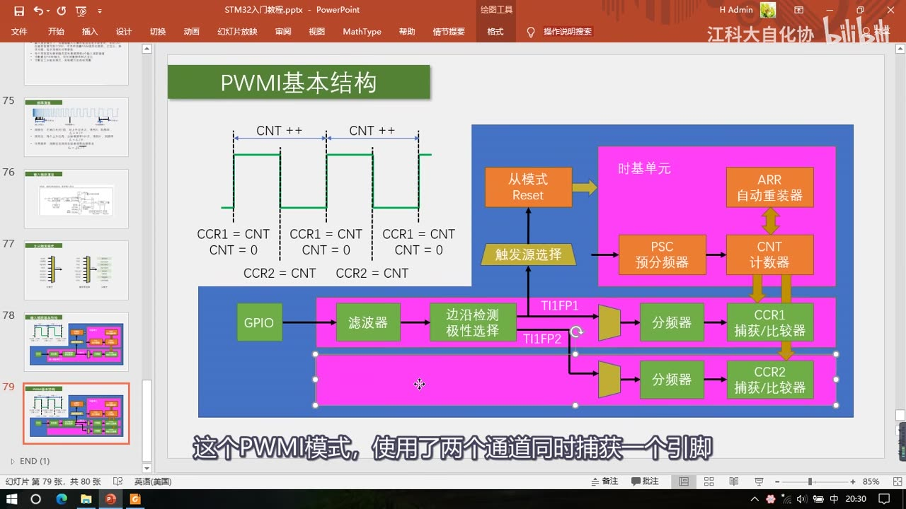
图 13：PPT「PWMI 基本结构」（本节重点图）——上半部分同输入捕获基本结构；多出下面一个通道：TI1FP2 经分频器 → CCR2 捕获/比较器；左上波形上升沿标 CCR1 = CNT / CNT = 0、下降沿标 CCR2 = CNT（不触发清零）
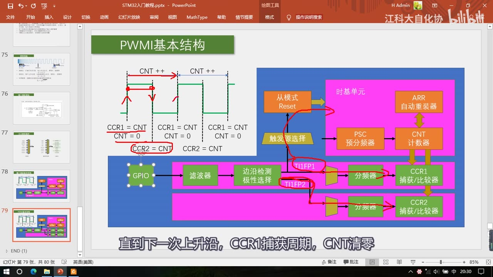
图 14：同一张 PWMI 结构图上的红笔标注——红线标出上升沿 CCR1 = CNT、CNT = 0、下降沿 CCR2 = CNT，以及 TI1FP1（上升沿）与 TI1FP2（下降沿，交叉进通道2）两路的走向；字幕「直到下一次上升沿，CCR1捕获周期，CNT清零」
9. 手册导读与下一集
- 本节内容在手册里主要对应两节：「输入捕获模式」和「PWM 输入模式」——他这里也是对这两种模式的一些介绍；不过手册里的描述全都是寄存器的方式，「还是不太好理解的」——「听完我的讲解，再来看一下他的描述，应该就比较容易明白是啥意思了吧」。
- 手册里还有 PWMI 模式的例子（TIMx_CH1 通道捕获周期也就是频率、通道 2 捕获脉宽也就是占空比）。
- 本节还讲了主从触发模式，它在手册的**「定时器同步」**一节有介绍（包括「使用一个定时器作为另一个定时器的预分频器」「一个定时器使能另一个定时器」「一个定时器启动另一个定时器」等，支持定时器级联）；作者说「这些定时器同步的功能比较高级，了解一下就行了」，主要还是理解从模式在这里配合输入捕获完成硬件自动化的用途。
- 结尾（38:49）：「好，那本小节的内容到这里就结束了，我们下一小节来学习输入捕获的代码部分。」——代码在 P18 [6-6]（就是片头这两个工程
6-6 输入捕获模式测频率、6-7 PWMI模式测频率占空比）。
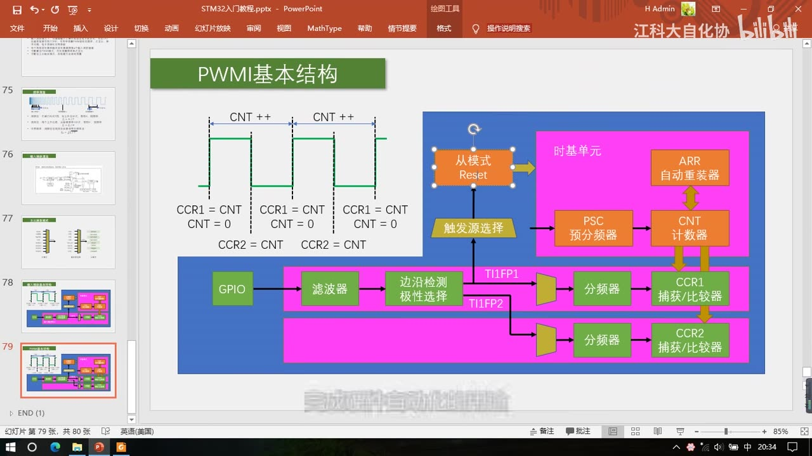
图 15：结尾画面——仍停在「PWMI 基本结构」页，38:49 说完「我们下一小节来学习输入捕获的代码部分」后 38:54 结束（本集没有片尾总结页）
坑与易错点
- 输入捕获和输出比较共用 4 个 CCR 和 CH1～CH4 引脚：同一个定时器上两者只能二选一，不能同时用——想同时输出 PWM 又测频率，就得用不同定时器或不同引脚（后半句「换定时器/换引脚」是延伸结论）。
- 「锁存到 CCR」≠「清零 CNT」：捕获只把当前 CNT 的值复制进 CCR，CNT 不会自己清零；要继续测下一个周期，必须用从模式 Reset 自动清零（或中断手动清零）。
- 先捕获、后清零：顺序绝不能反——如果先清零再捕获，CCR 里永远是 0；实现上是「CNT 转运到 CCR」与「从模式清 CNT」同时/先后紧接发生。
- 测周法公式是
fx = fc/N，N 是 CCR1 里那个计数值；而fc = 72M/(PSC+1)——标准频率是预分频之后驱动 CNT 的时钟，不是 72MHz 本身；千万别直接拿 72M 当 fc 用（除非 PSC=0）。 - 测频法与测周法别用反：高频适合测频法（闸门内沿多），低频适合测周法（周期长计次多）；分界是中界频率
fm = √(fc/T)。 ARR要设成最大 65535（测周法）：CNT 只能计 65535 个数，频率太低时一个周期的计数值会溢出。- 从模式触发源只有 TI1FP1 / TI2FP2：想硬件自动清零 CNT，只能用通道 1、2；CH3/CH4 没有，只能开捕获中断手动清零（频繁中断、耗软件资源）。
- 滤波器 ICF 是「连续 N 个相同才翻转」：不是简单的低通；采样越慢/N 越大，滤波越强、但响应越慢——噪声大才设大，信号变化快时设大可能把有效边沿也滤掉（后半句是延伸结论）。
CC1S[1:0]决定数据选择器：00是输出模式（给输出比较用），01输入且 IC1 映射 TI1、10输入且 IC1 映射 TI2、11输入且 IC1 映射 TRC（手册原文，注意别和CC2S的 01→TI2、10→TI1 记混）——输入捕获时必须配成 01/10/11，否则这路根本不是在捕获。- 交叉连接的两大目的别只记一个：①灵活切换输入 ②一个引脚同时给两个捕获单元（PWMI 的基础）——PWMI 能测占空比靠的就是第②点（TI1FP1 捕上升沿、TI1FP2 捕下降沿）。
- 占空比公式是
CCR2/CCR1：CCR1 是一个周期的计数值、CCR2 是高电平时间的计数值；两者用的是同一个 CNT 的同一套标准频率，所以比值才直接是占空比。 - PWMI 里只有上升沿那一路清 CNT：CCR2 捕获不会清零 CNT，所以 CNT 才能从上升沿一直数到下一个上升沿（CCR1 才是整周期）。
- 「主从触发模式」是作者自造的名字：手册里没有这个词，不要拿它去手册搜索；对应的是**主模式（MMS）+ 触发源选择（TS）+ 从模式（SMS）**三组寄存器位。
TS位只能在SMS=000（从模式关闭）时修改：手册明确写了「这几位只能在未用到时被改变，以避免在改变时产生错误的边沿检测」——改触发源前先把从模式关掉。- 本集没有 IC 代码：
TIM_ICInit、TIM_PWMIConfig、TIM_SelectInputTrigger、TIM_SelectSlaveMode这些本集一个都没出现，全在 P18 [6-6]；片头工程是现成的，只演示了现象。 - 它只能测数字信号：正弦要先比较器整形、高压要隔离，最终输入的必须是 0V/3.3V 的高低电平——别指望直接接交流信号。
时间轴
| 时间 | 内容 |
|---|---|
| 0:01 | 开场：本小节学定时器的第三部分——输入捕获功能 |
| 0:09 | 先看现象：输入捕获共两个程序——① 输入捕获模式测频率 ② PWMI 模式测频率和占空比 |
| 0:26 | 先看程序一；测频率需要信号源，借用上一节 PWM 模块在 PA0 输出可调波形 |
| 0:48 | 本节测量输入口是 PA6，一根线把 PA0 与 PA6 连起来自测；有示波器可接这根线核对，有信号发生器就直接接 PA6 |
| 1:19 | 现象：OLED 显示 1000Hz ⇒ PA0 输出的是 1000Hz 信号；回程序看参数调节部分 |
| 1:44 | 预分频 720 算出 1000Hz；改成 7200 → 100Hz，测到 100Hz |
| 2:07 | 改成 3600 → 200Hz，测到 200Hz；程序一只能测频率，不能测占空比 |
| 2:35 | 程序二 PWMI 模式测频率占空比：OLED 第一行 1000Hz、第二行 50%（PSC 720、CCR 50） |
| 3:09 | 改参数：PSC 3600 → 200Hz、CCR 20 → 20% |
| 3:30 | 实测 200Hz / 20% 没问题；可自行改参数或用信号发生器测试 |
| 3:41 | 现象演示结束，回 PPT 看输入捕获的理论部分 |
| 3:49 | IC = Input Capture；对应定时器结构图：左边输入捕获、右边输出比较 |
| 4:09 | 两者共用 4 个 CCR 和 CH1～CH4 引脚 ⇒ 同一定时器只能二选一 |
| 4:32 | 回顾输出比较：比较 CNT 与 CCR 大小关系，对输出电平置1/置0/翻转 |
| 5:11 | 输入捕获描述：引脚出现指定电平跳变时，当前 CNT 锁存到 CCR（4:28 只是引出句） |
| 5:23 | 输入捕获：跳变可以是上升沿或下降沿（可配置）；「锁存到 CCR」= 把 CNT 读出写入 CCR |
| 5:45 | 结构图中 4 个输入引脚 → 滤波和边沿检测电路；作用和外部中断差不多（都检测跳变） |
| 6:09 | 区别：外部中断向 CPU 申请中断，这里控制后续电路让 CNT 锁存到 CCR |
| 6:17 | 对比：输出比较引脚是输出端、输入捕获引脚是输入端 |
| 6:44 | 用处：测 PWM 频率、占空比、脉冲间隔、电平持续时间 |
| 7:15 | 每个高级/通用定时器 4 个输入捕获通道，两者电路没区别；基本定时器没有 |
| 7:43 | PWMI 模式（PWM 输入模式）专为测 PWM 频率和占空比设计；配合主从触发可实现硬件全自动（不干预、不进中断、直接读 CCR） |
| 8:37 | 要测频率，先补频率测量知识：图中是频率逐渐降低的方波（越左越高） |
| 8:52 | STM32 只能测数字信号：正弦要用运放比较器整形，高压要隔离（隔离放大器/电压互感器），最终输入 3.3V/0V |
| 9:35 | 测频法：闸门时间 T 内对上升沿计次得 N，fx=N/T；T 通常 1s（计次值直接是 Hz），2s 除 2、0.5s 乘 2 |
| 10:46 | 频率定义：1s 内来多少个周期，频率就是多少 Hz |
| 11:18 | 测周法：两个上升沿内以标准频率 fc 计次得 N，fx=fc/N |
| 11:56 | 没有无限精度的秒表，测量时间也是定时器计次：1/fc × N = 周期，取倒数得 fx=fc/N |
| 12:30 | 两法区别：测频法适合高频（闸门内沿多、N 大误差小；沿太少误差极大） |
| 13:20 | 测周法适合低频（周期长计次多）；fc=1MHz、待测 500kHz 时一个周期只计一两个数 |
| 13:57 | 测频法更新慢但平滑（自带均值滤波，1s 出一次）；测周法更新快但受噪声影响波动大 |
| 14:50 | 引出中界频率：测频法与测周法误差相等的频率点 |
| 15:05 | ±1 误差：两法都有（末尾半个周期只能舍弃或取整），N 越大影响越小 |
| 16:30 | 推导：令两法 N 相等解出 f ⇒ fm = √(fc/T)；小于 fm 用测周法、大于用测频法 |
| 17:20 | 频率测量讲完，开始用 STM32 实现 |
| 17:25 | 测频法可用外部计数 + 1s 定时中断实现（红外计次/定时器外部时钟改进），作者说自行研究不演示 |
| 18:14 | 本集输入捕获测频率用测周法：测两个上升沿之间的时间 |
| 18:36 | 总结构图：最左 4 个通道引脚（查引脚定义表） |
| 18:44 | 三输入异或门（输入接 CH1/2/3）：任一引脚翻转输出就翻转（为三相无刷电机霍尔服务） |
| 19:02 | 选上面则通道 1 输入是 3 引脚异或值，选下面则各用各的；本课不涉及无刷电机 |
| 19:42 | 输入滤波器和边沿检测器：滤波防毛刺，边沿检测选上升沿/下降沿（同外部中断） |
| 20:09 | 两套滤波+边沿检测：TI1FP1 / TI1FP2；通道 2 也得 TI2FP1（给上面）、TI2FP2（给下面） |
| 20:40 | 两信号可各走各的也可交叉（CH2→通道1、CH1→通道2） |
| 20:56 | 交叉目的①灵活切换后续捕获电路的输入 |
| 21:20 | ②一个引脚同时映射到两个捕获单元 = PWMI 模式的经典结构 |
| 21:58 | 通道 3/4 同样结构；另有 TRC 信号（来自从模式控制器，为无刷电机设计，暂不用） |
| 22:22 | 预分频器（每通道一个）→ 触发信号触发捕获；每来一个触发 CNT 向 CCR 转运一次 |
| 22:46 | 转运同时产生捕获事件（置标志位、可产生中断）；需要时开捕获中断 |
| 23:07 | 上升沿触发捕获：CNT 由内部标准时钟驱动 ⇒ CNT 值可记录两个上升沿间的时间（周期） |
| 23:30 | 取倒数即测周法的频率；CCR 捕获到的值就是 N，CNT 驱动时钟就是 fc |
| 23:51 | 细节：每次捕获后要清 CNT，下次沿捕获才是间隔；自动清零可用主从触发模式 |
| 24:30 | 图123（更详细的框图）是刚才框图的细化；引脚先过滤波器（TI1→TI1F，fDTS 采样） |
| 25:00 | CCMR1 的 ICF 位控制滤波参数；滤波器怎么工作看手册 CCMR1 |
| 25:21 | 手册 ICF[3:0]：定义 TI1 采样频率及数字滤波长度；数字滤波器记到 N 个事件才产生输出跳变 |
| 25:38 | 原理：以采样频率采样，连续 N 个都为高输出才高、都为低才低；噪声抖动时输出不变 ⇒ 滤波 |
| 26:07 | 采样越慢/N 越大滤波越强；噪声大就把参数设大 |
| 26:20 | 滤波后进边沿检测器，CCER 的 CC1P 选极性得 TI1FP1；经数据选择器进后续捕获电路 |
| 27:02 | 数据选择器由 CC1S 选；IC1PSC 配分频（不分频/2/4/8）；CC1E 控制输出使能 |
| 27:35 | 每捕获一次要清 CNT；硬件电路可自动完成；TI1FP1 和 TI1 边沿信号通向从模式控制器 |
| 28:10 | 从模式就是完成自动化操作的利器；接下来研究主从触发模式 |
| 28:25 | 「主从触发模式」是作者自起的名字（手册没有），是主模式+从模式+触发源选择的简称 |
| 28:38 | 主模式把内部信号映射到 TRGO 触发别的外设；从模式接收信号控制自身运行 |
| 29:00 | 触发源选择得到 TRGI 去触发从模式；从模式在列表里选操作执行 |
| 29:20 | 想让 TI1FP1 自动清 CNT：触发源选 TI1FP1、从模式选 Reset ⇒ 硬件全自动测量 |
| 29:47 | 信号具体含义看手册；主从触发还能做定时器级联（一个 TRGO 更新 → 另一个外部时钟模式1） |
| 30:30 | 主模式还可选复位/使能/比较脉冲/4 个 OCREF 作 TRGO 输出；不用特别记 |
| 31:05 | 手册：复位模式 = 触发输入 TRGI 上升沿重新初始化计数器（就是清零 CNT） |
| 31:15 | 回到 PPT：主模式/触发源选择/从模式三张图，库函数对应三个函数给参数即可 |
| 31:30 | 输入捕获基本结构：只用一个通道 ⇒ 只能测频率 |
| 31:40 | 时基单元配置启动后 CNT 在预分频后的时钟驱动下自增；fc = 72M/预分频系数 |
| 32:05 | 输入捕获通道1：GPIO→滤波→边沿检测选 TI1FP1 上升沿→直连通道、不分频 |
| 32:20 | 上升沿后 CNT 转运到 CCR1；同时触发源 TI1FP1 + 从模式 Reset 清 CNT |
| 32:50 | 顺序：先转运 CNT→CCR 再清 CNT（或非阻塞同时），绝不能先清零 |
| 33:05 | 波形：CCR1=CNT、CNT=0；CNT 从 0 自增到下一个上升沿，CCR1 始终是最新周期计数值 N |
| 34:23 | fc/N 就是频率；读 CCR1 得 N 再算 fc/N；不读时全自动、不占软件资源 |
| 34:47 | 注意1：ARR 一般设最大 65535（CNT 上限），频率太低会溢出 |
| 34:58 | 注意2：从模式触发源只有 TI1FP1/TI2FP2（没有 TI3/TI4） |
| 35:02 | 所以硬件清零只能用 CH1/CH2；CH3/CH4 只能开捕获中断手动清零（频繁中断耗软件） |
| 35:20 | 最后一个 PPT：PWMI 基本结构，两个通道同时捕获一个引脚 |
| 35:41 | TI1FP1 上升沿触发捕获+清 CNT（捕周期，CCR1=整周期计数值） |
| 35:53 | TI1FP2 下降沿经交叉通道触发通道2 捕获（CCR2=高电平计数值） |
| 36:15 | 波形：上升沿 CCR1 捕获+清 CNT → CNT++ → 下降沿触发 CCR2 捕获（不清 CNT）→ CNT++ → 下个上升沿 |
| 36:36 | CCR1 是整周期计数值、CCR2 是高电平计数值 ⇒ 占空比 = CCR2/CCR1 |
| 37:00 | 也可两个通道同时捕获第二个引脚（TI2FP1/TI2FP2），两种输入可切换 |
| 37:11 | 内容差不多结束，最后大致看手册：对应「输入捕获模式」和「PWM 输入模式」两节 |
| 37:30 | 手册描述全是寄存器方式不太好理解；PWMI 例子：通道1 捕周期、通道2 捕脉宽 |
| 38:00 | 还涉及主从触发（「定时器同步」一节，含定时器级联），功能比较高级了解即可 |
| 38:49 | 结尾：下一小节学习输入捕获的代码部分 |
存疑
- 本集文本来自画面硬字幕的 OCR（PP-OCRv4，source=subtitle-ocr，675 段），不是 ASR。讲参考手册那几段混入了大量手册正文（如「输入捕获模式可以用来测量脉冲宽度或频率」「一旦 CC1E=0（TIMx_CCER 寄存器中）则预分频器复位」「本译文仅供参考，如有翻译错误，请以英文原稿为准」等），这些不是口述内容；Keil 的输出（
Flash Load finished at 19:41:26、Application running ...）也被抓进字幕。典型 OCR 错字（本集实际出现）：本小节→ 「本小范」、缩写是 IC→ 「缩写是C」、Input Capture→ 「lnouit Captume/InputCapture」、PWMI 模式→ 「PWM1模式/PWM模式」、TI1FP1→ 「Tl1FP1/T1FP1」、IC1PSC/IC1F→ 「ICPS/ICF位」、比较→ 「此较」、引脚→ 「引I脚/引1脚」、手册在 CCMR1→ 「手册积在CCMR1」以及大量行首噪声（宫、门、山、三、豆、」、厂、开）等，已按画面和上下文校正。 - 本集没有写输入捕获的代码：片头两个工程是成品（main.c 里已经调用
IC_Init()、IC_GetFreq()），而IC.c/IC.h的内容本集没有展示；所以本笔记里没有TIM_ICInit的成员值（IC_Polarity、IC_Selection等）、也没有TIM_PWMIConfig/TIM_SelectInputTrigger/TIM_SelectSlaveMode的用法，这些全在 P18 [6-6]。 - 中界频率的推导只有口述：画面（图 6）只给了
fm = √(fc/T)这个公式，推导过程（「把两法的 N 提出来、令相等、解出 f」）是口述的，PPT 上没有展开；本笔记按口述写推导思路，没有补额外数学。 - 测频法在 STM32 上的实现没有演示：作者明确说「可以自行研究，我就不再演示了」，本集没有任何测频法的代码或波形。
- 滤波器具体选哪一档没有给建议：只讲了原理和手册 ICF 表，没有说实际项目该用哪个值（要看 P18 的代码）。
- 「从模式触发源只有 TI1FP1/TI2FP2」是口述结论：图 11（SMCR 的 TS 表）能间接印证（TS 只有 100 TI1F_ED、101 TI1FP1、110 TI2FP2、111 ETRF 这几个输入源），但 PPT 没有专门一页强调这条。
- 片头与理论之间剪辑比较跳：0:00 是 PPT 标题页 → 0:09 切到工程现象 → 03:45 又回 PPT，中间没有章节提示字幕；本笔记时间轴以口述为准。
- 本集画面里没有示波器：P15/P16 有示波器读数，本集只有 OLED 显示，所以「1000Hz / 100Hz / 200Hz / 50% / 20%」的验证依据是OLED 画面 + 口述，不是示波器实测。
- 视频没有片尾总结页：38:42 画面还停在 PWMI 结构（图 15），38:49 一句预告后 38:54 结束。
- 工程目录号与视频小节号不同套：本集是 [6-5]，片头两个工程目录叫
6-6/6-7（代码小节编号）——与 P15/P16 的情况一致。